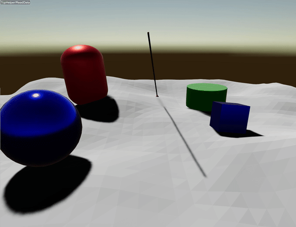

Ray Test

A ray test is a collision check between the world and a ray. Users specify the starting point, direction, and length. It returns the closest hit along the ray (if any).
Arguments
Single-ray test (rayTest)
Signature (C++):
const RayCollisionList& rayTest(const Vec<3>& start,
const Vec<3>& direction,
double length,
size_t objectId = size_t(-10),
size_t localId = size_t(-10),
CollisionGroup collisionMask = CollisionGroup(-1));
start: ray origin in world frame.direction: ray direction in world frame. It does not need to be normalized.length: ray length in meters. Only hits within [0, length] are returned.objectId/localId: optional self-filter. Collisions with the given object and local body id pair are ignored (useful for sensors attached to robots). The defaults disable this filter.collisionMask: collision mask to filter which groups the ray can hit. The default (-1) allows all groups.
The returned RayCollisionList stores only the closest hit (0 or 1 item).
Example
An example is provided here. Only the following line
auto& col = world.rayTest({0,0,5}, direction, 50.);
performs the ray test. The rest of the code is for demonstration only. The ray test stores only the closest hit.
Getting the hit object (example)
To identify what was hit, check the returned RayCollisionList.
const auto& hits = world.rayTest({0, 0, 5}, direction, 50.0);
if (hits.size() == 0) {
std::cout << "No hit\n";
} else {
const auto& hit = hits[0];
const auto* obj = hit.getObject();
if (obj) {
std::cout << "Hit object: " << obj->getName()
<< " (id=" << obj->getIndexInWorld() << ")\n";
}
std::cout << "Hit position: " << hit.getPosition().transpose() << "\n";
const auto body = hit.getCollisionBody();
if (body) {
std::cout << "Collision body: " << body->name << "\n";
}
}
Batch ray tests (lidar)
For spinning lidar-style scans, use World::rayTestLidar(...) instead of
calling rayTest(...) for each ray. It is significantly faster because it:
Performs a single frustum-based broadphase to collect candidate bodies for the whole scan (yaw/pitch/range window), instead of repeating a full world scan per ray.
Reuses the internal ray body and avoids per-ray allocations.
Performs per-ray AABB checks only on the prefiltered candidate list.
Minimal example:
std::vector<raisim::Vec<3>, raisim::AlignedAllocator<raisim::Vec<3>, 32>> scan;
world.rayTestLidar(rot, pos,
yawStartCount, yawEndCount, yawIncrement, spinDirection,
pitchSamples, pitchMinAngle, pitchIncrement,
rangeMin, rangeMax,
objectId, localId, collisionMask,
scan);
The output scan contains hit points in the sensor frame (one per ray that hits).
Arguments (batched lidar scan)
rot: sensor orientation (sensor frame to world frame).pos: sensor position in world frame.yawStartCount,yawEndCount,yawIncrement: yaw sweep range and step (in radians). The scan iterates from start to end usingspinDirection.spinDirection: +1 or -1, controlling yaw sweep direction.pitchSamples,pitchMinAngle,pitchIncrement: pitch sampling configuration (in radians).rangeMin,rangeMax: min/max range in meters.objectId/localId: optional self-filter (same asrayTest).collisionMask: collision mask to filter which groups the rays can hit.scan: output hit positions in the sensor frame.
Details
RayCollisionItem summary
Each hit entry stores:
getObject(): pointer to the hitraisim::Object(or nullptr if none).getPosition(): world-frame hit position (contact point).getCollisionBody(): collision body handle for the hit (may be null for some objects).
RayCollisionList summary
Container semantics:
size(): number of valid hits in the list.operator[](i): random access to the i-th hit.begin(),end(): iterators over valid hits.back(): iterator to the last valid hit.setSize(n): updates the number of valid hits (used internally).resize(n),reserve(n): storage management.
Notes
RayCollisionListis a lightweight container reused across calls. It is cleared and populated byrayTest(...).It contains at most one item because RaiSim keeps only the closest hit along the ray. Use
list.size()to check whether a hit occurred (0 or 1).
API
RayCollisionItem
-
class RayCollisionItem
RayCollisionList
-
class RayCollisionList
Public Functions
-
inline RayCollisionItem &operator[](size_t i)
Access an item by index.
- Parameters:
i – [in] Index into the hit list.
- Returns:
Hit entry at the given index.
-
inline const RayCollisionItem &operator[](size_t i) const
Access an item by index.
- Parameters:
i – [in] Index into the hit list.
- Returns:
Hit entry at the given index.
-
inline size_t size() const
- Returns:
Number of valid hits.
-
inline void setSize(size_t size)
Set the number of valid hits in the list.
- Parameters:
size – [in] Number of hits.
-
inline void resize(size_t size)
Resize the storage for hit entries.
- Parameters:
size – [in] New storage size.
-
inline void reserve(size_t size)
Reserve storage for hit entries.
- Parameters:
size – [in] Capacity to reserve.
-
class iterator
-
inline RayCollisionItem &operator[](size_t i)